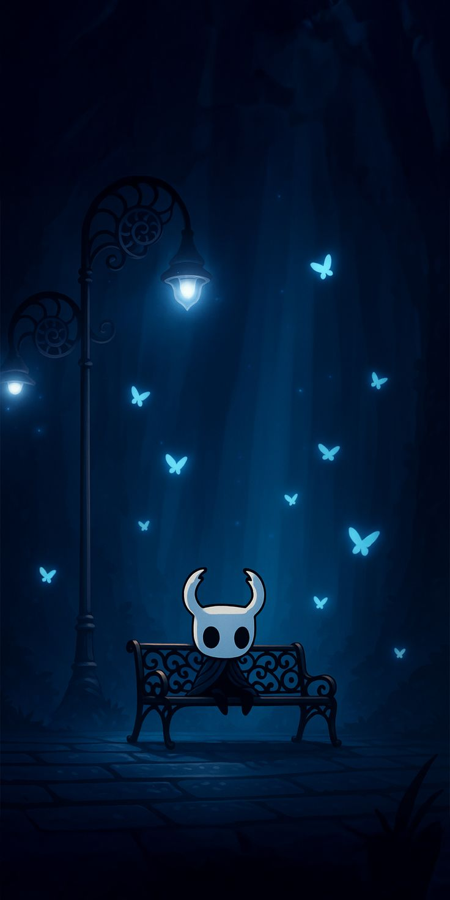
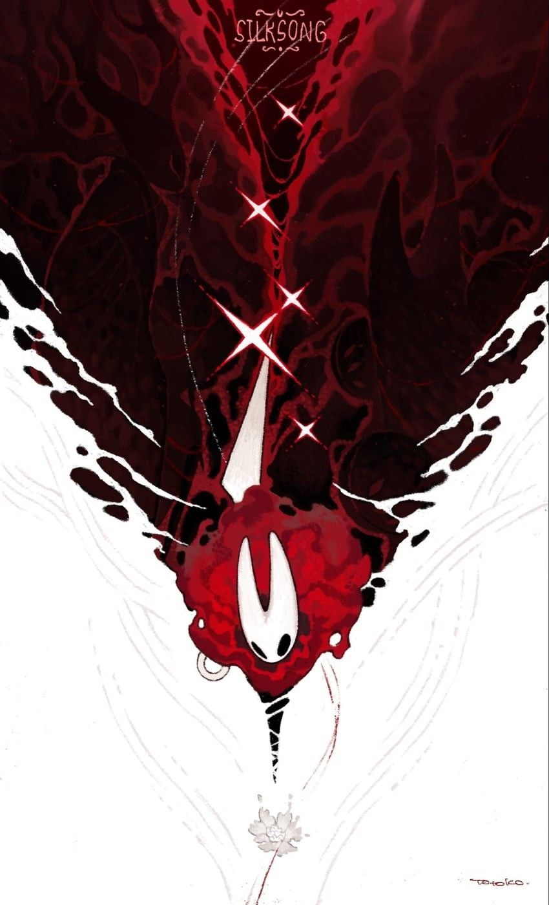
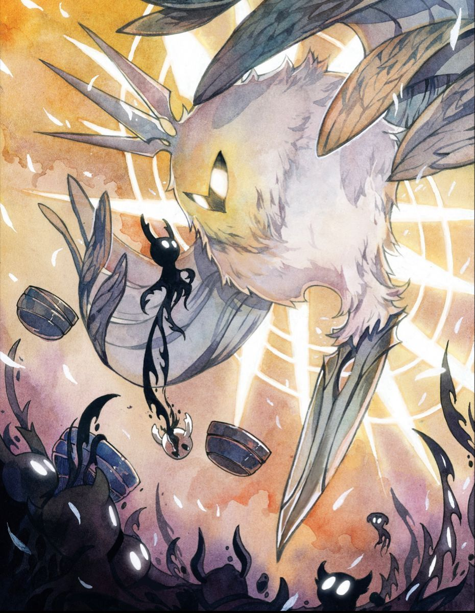
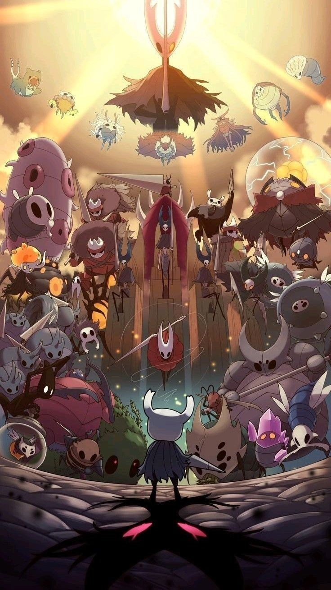
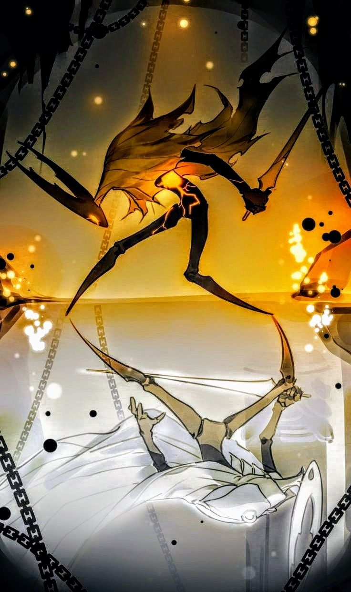
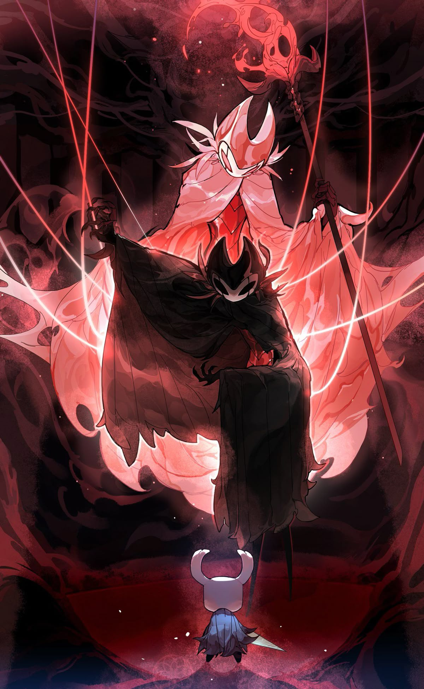
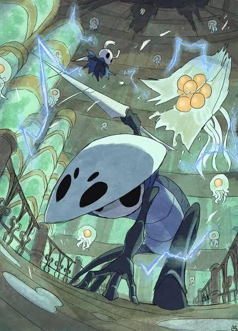
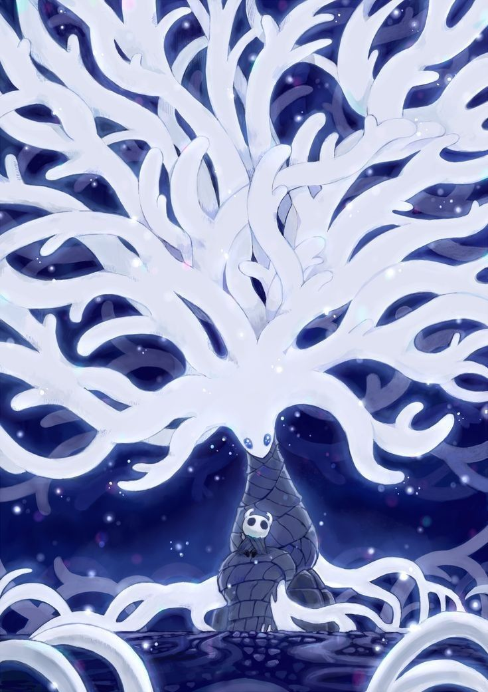
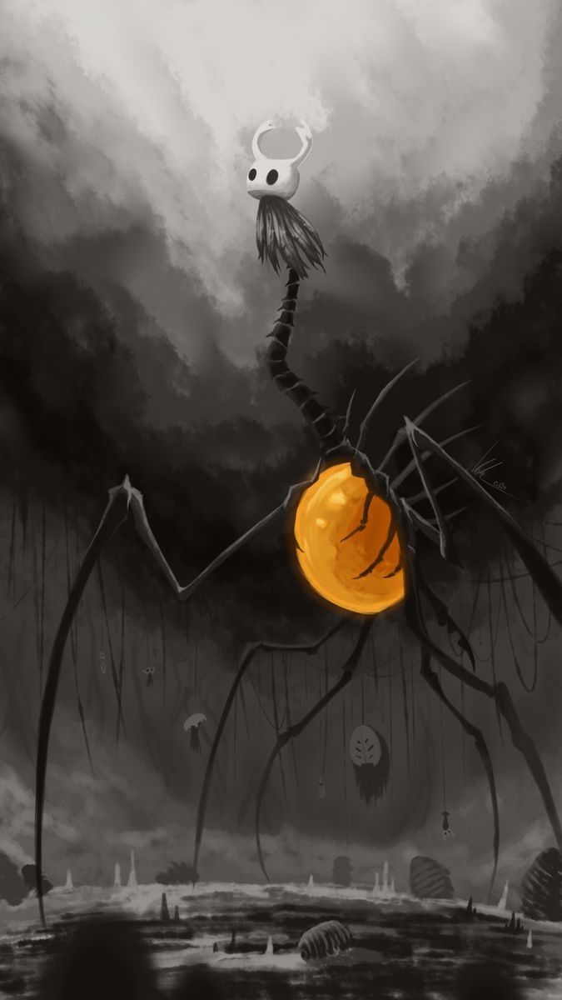

Explora algunos de los personajes más memorables del reino de Hallownest a través de esta galería responsiva.

El Caballero es el protagonista del juego. Recorre Hallownest enfrentándose a peligrosos enemigos mientras descubre los secretos del reino.

Hornet es una hábil guerrera y protectora del reino. Su agilidad y determinación la convierten en uno de los personajes más importantes de la historia.

La Radiancia es la responsable de la infección que consume Hallownest y representa el mayor desafío del juego.

El Hollow Knight fue creado para contener la infección y proteger el reino, sacrificando su propia libertad.

Pure Vessel representa al Hollow Knight antes de ser corrompido, mostrando todo su poder y perfección.

Grimm es el líder de la Troupe Grimm y uno de los jefes más desafiantes y carismáticos de Hollow Knight.

Quirrel es un viajero amable y sabio que acompaña al jugador en diferentes momentos de la aventura.

La Dama Blanca es una antigua gobernante de Hallownest y una figura clave dentro de la historia del reino.

Nosk es una criatura aterradora capaz de adoptar apariencias familiares para atraer y sorprender a sus presas.